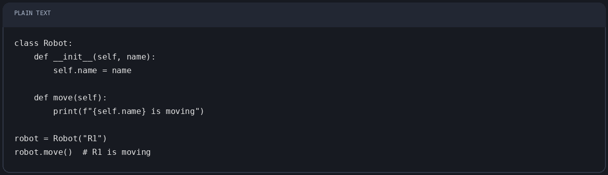
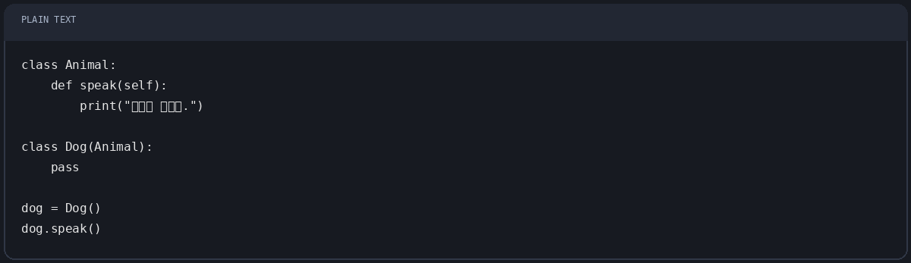
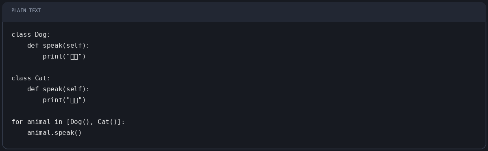
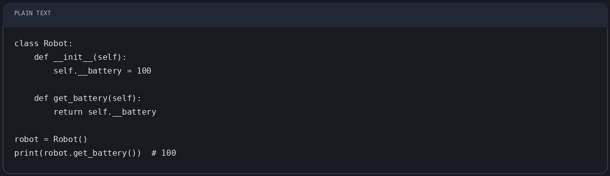
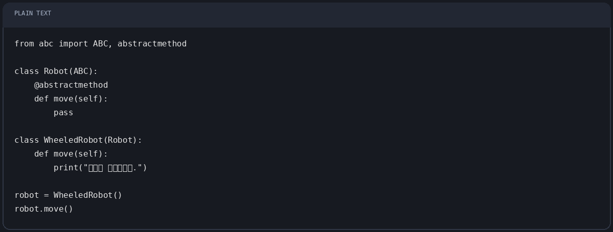

📚 2주차 Python 기초&심화 문법 (2026.10.15 Thu ~ 2026.10.20 Tue)
Total : 4 days
📕 D. OOP | Object-Oriented Programming (2026.10.20 Tue)
📃 a. OOP (객체지향 프로그래밍)
- OOP : 데이터와 기능을 하나의 객체로 묶어 프로그램을 설계하는 방식
- Class (클래스) : 객체를 만들기 위한 설계도
- Instance (인스턴스) : 클래스를 기반으로 생성한 실제 객체
- Attribute (속성) : 객체가 가지는 데이터
- Method (메서드) : 객체가 수행하는 기능

class: 클래스 정의__init__(): 인스턴스 생성 시 초기화self: 메서드가 호출된 인스턴스 자신robot:Robot클래스로 생성한 인스턴스
📃 주요 OOP 개념
| 개념 | 의미 | 예시 |
|---|---|---|
| 상속 (Inheritance) | 기존 클래스의 속성과 기능을 물려받음 | class Dog(Animal): |
| 다형성 (Polymorphism) | 같은 메서드 호출이 객체에 따라 다르게 동작 | dog.speak() |
| 캡슐화 (Encapsulation) | 데이터와 기능을 묶고 내부 구현에 대한 직접 접근을 관리 | _value, __value |
| 추상화 (Abstraction) | 핵심 기능만 외부에 노출하고 세부 구현을 감춤 | move() 인터페이스 |
1. 상속 (Inheritance)
기존 클래스의 기능을 재사용하고 확장하는 개념

2. 다형성 (Polymorphism)
같은 메서드 이름을 사용해도 객체에 따라 다른 결과를 낼 수 있는 개념

3. 캡슐화 (Encapsulation)
객체 내부의 데이터를 보호하고 정해진 메서드를 통해 접근하도록 설계하는 개념

※ __battery는 이름 변경(Name Mangling)이 적용되어 직접 접근이 제한되지만, 완전한 보안 기능은 아닙니다.
4. 추상화 (Abstraction)
공통적으로 필요한 기능의 형태를 정의하고, 실제 동작 방식은 하위 클래스에서 구현하는 개념

ABC: 추상 클래스 정의에 활용@abstractmethod: 하위 클래스에서 구현해야 하는 메서드 지정
💡 핵심 요약
- Class & Instance : 클래스는 설계도, 인스턴스는 실제 객체
- 상속 : 기존 기능을 물려받아 재사용
- 다형성 : 동일한 인터페이스로 다양한 동작 수행
- 캡슐화 : 데이터와 기능을 묶고 접근을 관리
- 추상화 : 핵심 기능과 인터페이스를 정의하고 세부 구현을 감춤
🎯 학습 목표: 클래스를 사용해 객체를 생성하고, 객체지향 프로그래밍의 4가지 핵심 원리를 이해할 수 있다.